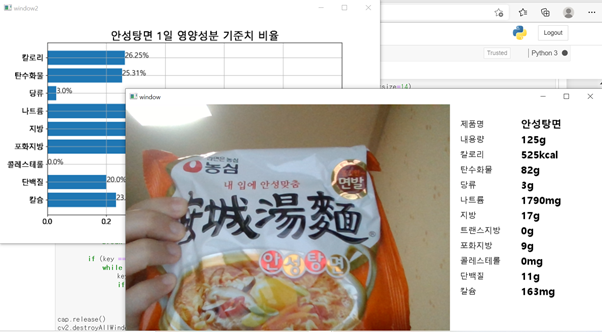

라면 분류기
2021년 2학기에 수강한 딥러닝 교과목에서 수행한 텀프로젝트입니다.
딥러닝 모델을 구현하여 젯슨 나노를 활용하여 결과를 출력하는 것이 목표입니다.
시판되는 10가지 라면을 분류하여 해당 라면의 영양성분 정보를 화면에 출력합니다.
결과 출력 화면입니다.
처음에는 OCR로 식품의 영양성분 텍스트를 읽는 것을 목표로 했는데 OCR 기능을 구현하지 못하여
라면의 영양성분 정보를 미리 저장해놓은 뒤, 라면을 분류하여 매칭되는 정보를 출력하도록 했습니다.
테스트 모습입니다.
신경망 구현과 검증 외에 학습 데이터셋 구성, 전반적인 코드 구조 작성, 출력 기능 구현, 포팅 등을 담당했습니다.
학습 데이터셋은 구글링을 통해 라면 사진을 확보한 뒤, 이미지 증식 코드로 증식하여 구성했습니다.

기한 내에 딥러닝 모델을 구현하려 노력했지만 완성한 모델의 성능은 별로 좋지 못했습니다.
우선 신경망 구성과 원리를 잘 이해하지 못했고 학습 데이터셋도 충분하게 확보하지 못했습니다.
그러나 딥러닝 모델을 다뤄볼 수 있었고, 많이 미흡하지만 결과물도 만들 수 있어 좋았습니다.